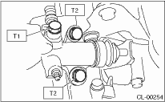
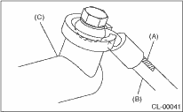

1. Apply grease (KOPR-KOTE: Part No. 003603001) to the contact point of the release lever and operating cylinder.
2. Install in the reverse order of removal.
Tightening torque:
T1: 18 N·m (1.8 kgf-m, 13.0 ft-lb)
T2: 37 N·m (3.8 kgf-m, 27.5 ft-lb)

NOTE:
• Be sure to install the clutch hose with the mark side facing upward.
• Be careful not to twist the clutch hose during installation.

|
(A) |
Mark |
|
(B) |
Clutch hose |
|
(C) |
Operating cylinder |
3. After bleeding air from the operating cylinder, ensure that the clutch operates properly.